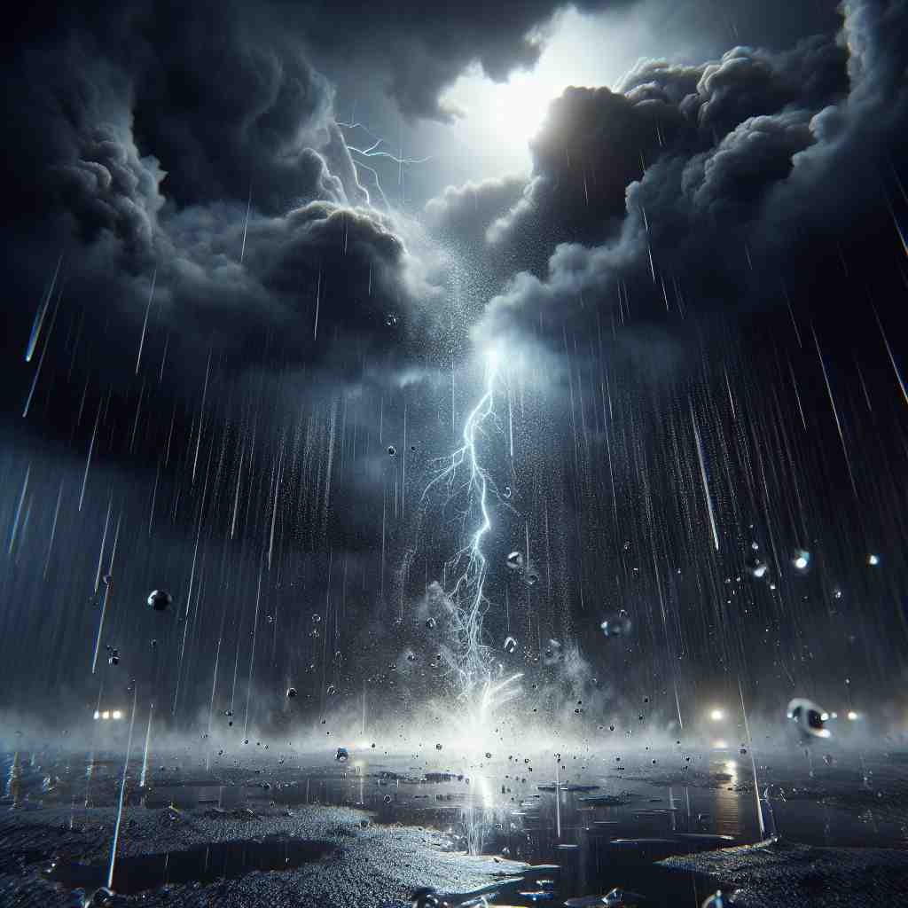
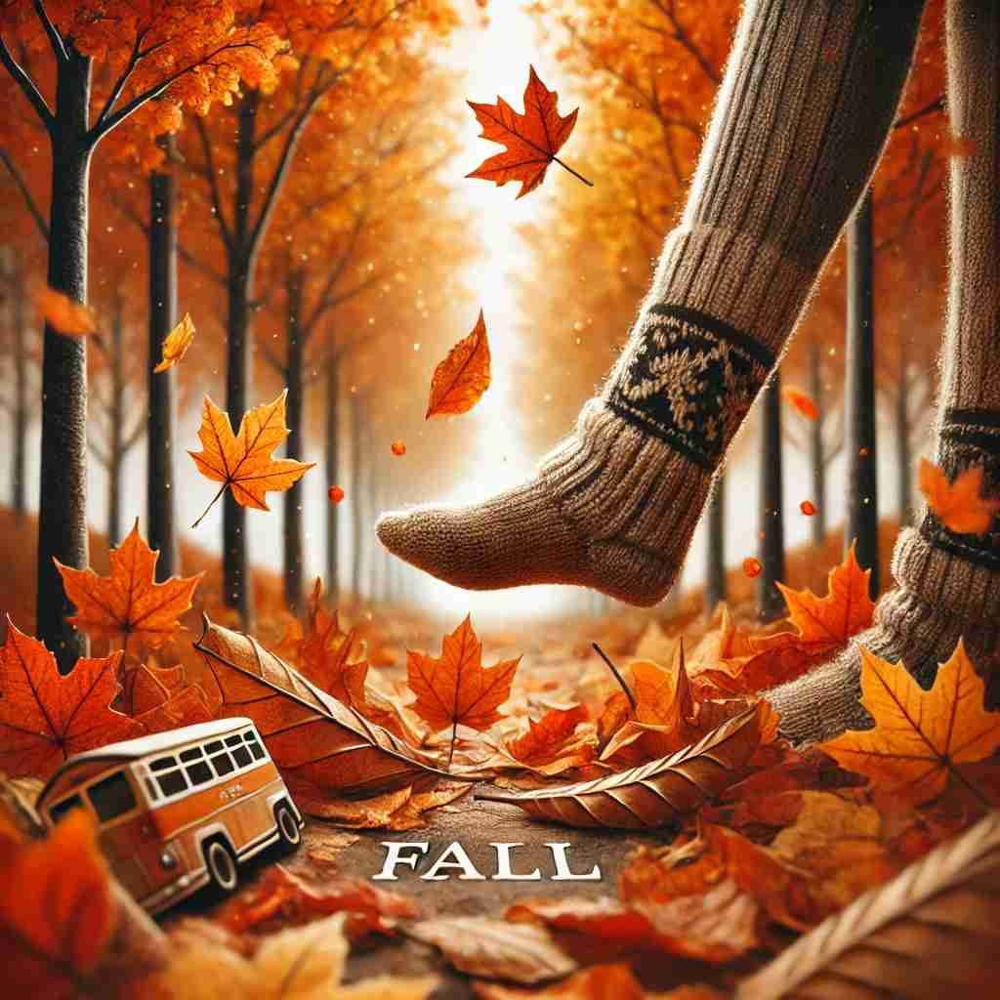

💬 The apple will fall from the tree soon.

💬 The boy will fall off the bike if he doesn't hold on tight.

💬 The rain begins to fall from the sky.

💬 In autumn, leaves fall from the trees.
🔈 [fɔːl]
🗝️ v. to move downwards from a higher position
🖼️ 在一个金色的秋天，孩子们在公园里欢快地奔跑着。一片树叶轻轻地从高高的树枝上飘落下来，旋转着直至落在地面上。这正展示了'fall'的动作：从高处向下移动。
🔍 想象一个物体从高处下落的画面。这个核心动作可以帮助你联想'fall'的各种含义：无论是具体的物体下落，还是抽象的数值下降、城市陷落、事件发生、声音降低，甚至是因树叶飘落而得名的秋季。通过这个下落的意象，你可以更容易理解和记住'fall'的多重含义。
💬 The apple will fall from the tree soon.
💬 The boy will fall off the bike if he doesn't hold on tight.
💬 The rain begins to fall from the sky.
💬 In autumn, leaves fall from the trees.
🌳 该单词源于古英语词 'feallan'，意为 '掉落或跌倒'。没有明显的前缀或后缀修饰。
💡 可以联想 '瀑布'（waterfall）的概念，水流向下落的场景帮助记忆 'fall' 的含义。通过自然现象的关联，更容易掌握这个单词的基本意思。
🗝️ v. to decrease in amount, level, or value
🖼️ 在一个热闹的股票交易所，大屏幕上显示的股价正在剧烈波动。交易员们紧张地关注着，因为他们注意到一只股票的价格正在迅速'fall'，从一个高点降至新低。
💬 The temperature falls at night.
❓ 类比物体下落，数值或水平降低
🗝️ v. to be defeated or captured
🖼️ 在一场激烈的象棋对局中，棋手们全神贯注地盯着棋盘。经过几步精妙的布局，一方终于攻陷了对手的堡垒，对方的国王无奈地倒下，象征着他被'fall'所击败。
💬 The city fell to the enemy after a long siege.
❓ 比喻失败如同倒下
🗝️ v. to happen or occur
🖼️ 在某个星空璀璨的夜晚，人们聚集在一块空旷的草地上观看流星雨。随着夜幕降临，第一颗流星划过天际，宣告流星雨的'fall'正在发生。
💬 My birthday falls on a Sunday this year.
❓ 事件发生如同从天而降
🗝️ v. to become lower in pitch or volume
🖼️ 在一个安静的音乐教室，老师正在指导学生合唱。当一位学生的音调逐渐'fall'时，音乐变得轻柔而低沉，为整首曲子增添了温柔的氛围。
💬 Her voice fell to a whisper.
❓ 声音降低如同物体下落
🗝️ n. the season between summer and winter
🖼️ 在一个温暖的小镇，秋天如期而至。树叶纷纷变得色彩斑斓，农民们忙碌地收割庄稼。孩子们兴奋地穿上暖和的毛衣，享受着'fall'带来的清爽空气。
💬 The leaves change color in the fall.
❓ 因树叶在此季节落下而得名